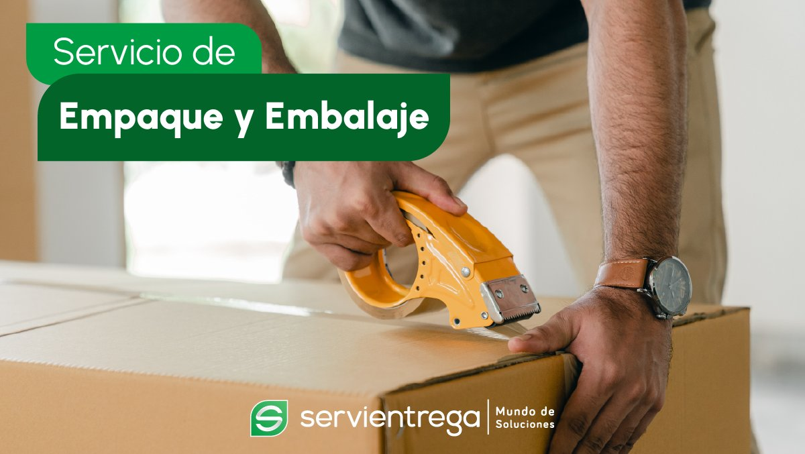
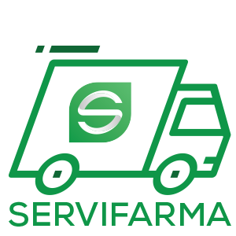

~TRANSITE DELUGE ~

Servicios
| Entrega de documentos | |
|---|---|
| Son todos aquellos documentos o sobres hasta 2 kilos amparados con una guia individualizada que se maneja con servicio de recolección, transporte y entrega puerta a puerta. 491 destinos en margen de 24-48-72-96-120 horas | |
| Mercancías | |
|---|---|
| Esta unidad estratégica de Negocios se orienta a la busqueda de soluciones para el manejo de mercancías desde el lugar que se inicia el proceso hasta el cliente final. Se presta el servicio de recolección, transporte, distribución y entrega puerta a puerta, cubriendo trayectos urbanos, regionales nacionales e internacionales | |
| Internacional | |
|---|---|
| Recolección en origen transporte, manejo entrega en su destino final. Tiempos de tránsito entre 48-96 horas . Procesos eficientes en aduanas. Atencion personalizadas |
|

| Empresarial | |
|---|---|
| Es un servicio prefencial de entrega de documentos de punto a punto en rutas de ida y vuelta , se lo maneja en tutal de seguridad de 60x45 CMS, de dimensión, con una capacidad maxima de 5kg. Y su entrega es antes de las 10:00am(Consultar coberturas |
|

| Embalaje | |
|---|---|
| Brindar a nuestros clientes, materiales y servicios de Empaque y Embalaje que satisfaga su necesidad de envios de documentos y mercancías a escala nacional |  |
| Servifarma | |
|---|---|
| Solución desarrollada cumpiendo con los reglamentos y requisitos establecidos por el ARCSA para brincar el servicio a laboratorios, importadores, distribuidores, fabricantes, cadenas de abastecimiento farmacéutico |  |
| Almacenamiento | |
|---|---|
| Contamos una sólida infrastructura de almacenamiento en las ciudades de Quito y Guayaquil con 4.250 posiciones palletes. Se maneja inventarios con fotografías.o | |